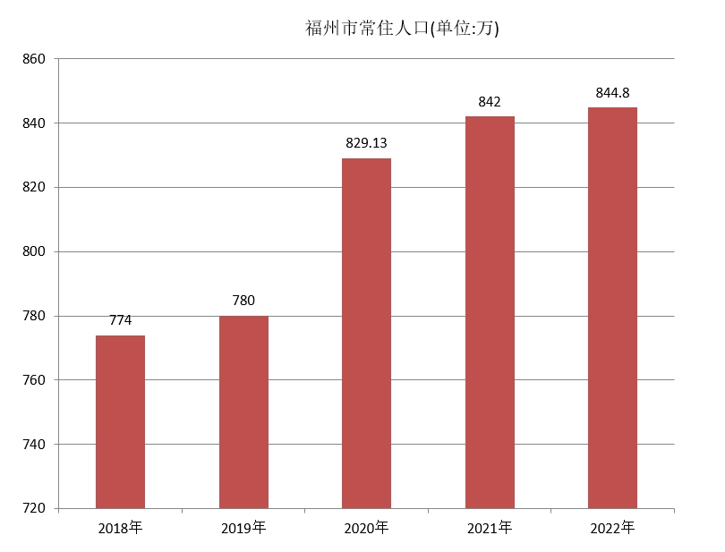

福州历史悠久，新石器时代晚期昙石山文化至中原商周时期的黄土仑类型表明闽族先民们已在此以渔猎、采集，或从事原始农耕，使用磨制石锛、石斧、石刀等石器；已掌握纺织、制陶等生产技术和相应的装饰艺术。战国秦汉，福州闽族先民与越王勾践后裔融合形成闽越族地方政权。1992年、1998年、1999年，分别在鼓屏路钱塘巷西口基建工地、屏山菜市场基建工地、欧冶池畔省财政厅基建工地，发现汉代文化堆积层，出土有汉代龙凤纹瓦当、万岁纹瓦当、布纹砖、筒瓦、板瓦堆积和建筑基址等；与此同时，在新店古城村发现汉代城址遗迹等，都为《史记》有关闽越国都冶城的记载提供新的实物佐证。 自汉武帝平定闽越，迁民于江淮之间后，福州这一繁荣的地方王国曾一度凋零衰落。晋太康三年（282年），太守严高筑子城，凿西湖、东湖灌溉农田；东晋衣冠士族与百姓南渡，许多姓氏举族入闽，带来中原地区先进的生产技术和文化，促进福州经济、文化的复苏与发展。福州城郊就发现众多的晋代与南朝的墓葬；1982年，福州怀安窑址发掘，出土3000多件器物，发现有南朝款识的窑具。唐开元十三年（725年），升福州为都督府，府治设在州城内（今鼓屏路），福州之名始用至今。唐末，王审知主闽，建闽国，在子城外筑罗城和南北夹城，北面横跨越王山（即屏山），并将南面九仙山（即于山）、乌石山围入城中，开凿了绕护罗城南、东、西三面的大壕沟，奠定“三山鼎峙，一水环流”的独特城市格局，福州从而有“三山”别称。 宋治平二年（1065年），张伯玉知福州，编户植榕，绿荫满城，使“榕城”福州声名远播。其后，蔡襄、程师孟、曾巩、赵汝愚、梁克家、辛弃疾等诸多名人相继主政福州，励精图治，促进经济文化发展，福州遂享有“海滨邹鲁”的美誉。宋末、明末福州两度成为临时国都。鸦片战争后，福州被辟为五口通商口岸之一；随着洋务运动兴起，福州船政成为中国近代海军摇篮，又是中国近代文教和科技人才的摇篮之一。
截至2021年，福州市辖鼓楼区、台江区、仓山区、晋安区、马尾区、长乐区6个区，闽侯县、连江县、罗源县、闽清县、永泰县、平潭县6个县，代管福清市1个县级市；全市（含平潭县）辖45个街道、97个镇、39个乡（含连江县马祖乡、2个民族乡）；540个社区、2196个村。市人民政府驻鼓楼区乌山路96号。
.jpg)
福州市地貌属典型的河口盆地，东有鼓山，西有旗山，南有五虎山，北有莲花峰，其海拔多在600～1000米之间。南部为盆地的大部分；北部为山地，从西南向东倾斜；西部为中低山地；东部丘陵平原相间。山地、丘陵占全区土地总面积的72.68%，其中山地占32.41%，丘陵占40.27%。鹫峰、戴云两山脉斜切南北，闽江横贯市区东流入海。
福州市属典型的亚热带季风气候，气温适宜，温暖湿润，四季常青，阳光充足，雨量充沛，霜少无雪，夏长冬短，无霜期达326天。年平均日照数为1700~1980小时；年平均降水量为900~2100毫米；年平均气温为20~25℃，最冷月1~2月，平均气温达6~10℃；最热月7~8月，平均气温为33~37℃。极端气温最高42.3℃，最低-2.5℃，2013年福州成为四大火炉之首。年相对湿度约77%。常出现热岛效应，又福州为盆地地形，夏季中午气温高达36℃以上。主导风向为东北风，夏季以偏南风为主。7~9月天气炎热，是台风活动集中期，每年平均台风直接登陆市境有2次。最佳旅游季节为每年4~11月。 福州冬季一般无雪。有时在鼓山等海拔较高地区有零星降雪。不过冬季有雨，气候相对较为湿润。 福州市水资源十分丰富。闽江是全省最大的水系，发源于武夷山脉，在水口镇流入福州境内；自西北向东南流经闽清县、闽侯县、市区、长乐区，分别从长门水道和梅花港水道注入东海。闽江全长530千米，在福州境内150千米；流域面积60992平方千米，在福州市境内8011.27平方千米。境内主要支流有安仁溪、梅溪、大樟溪、大目溪、新店溪、营前溪等。福州市区水道密布，主要有晋安河、白马河、光明港、安泰河等30多条内河，都与闽江沟通，水质良好。此外，连江县的主要水系是鳌江；福清市的主要水系是龙江。 福州市本地产水资源为101.59亿立方米，入境客水量达546.9亿立方米，总计水资源量为666.49亿立方米，人均水资源高达1.25万立方米。 福州市林地面积7792平方千米，占全市总面积的65%，现有森林总面积947万亩，林木总蓄积量1680万立方米，森林覆盖率57.8%，绿化程度达88.6%。 福州地区维管束木本植物，共有109科、428属、945种。及亚变种，约占全省木本植物总种数（1900余种）的48%，种类不少，但资源量不大。在树种结构上，针叶林明显多于阔叶林，两者大致为75∶25。针叶树中以马尾松和杉木为主，其中马尾松尤为突出。阔叶树中以壳斗科为主，如米槠、苦槠、甜槠、栲等，其次为樟科，如樟、楠等。桑科榕树分布也较普遍。 福州市区地热总储量达9800立方米，是中国三大温泉区之一。福州盆地的地热田是福建省最大的地热田，其泉脉广、温度高、水质优、流量大、埋藏浅，且分布在市区中心。 福州市境内发现各类矿产56种（包括亚矿种）。优势矿产以砂、石、土、地热为主，金属矿产矿种少、储量小，高品位矿少。开发利用的矿产有11个矿种，主要矿种为建筑用花岗岩和建筑用凝灰岩、叶蜡石、地温、矿泉水、陶瓷土。地热资源丰富且有特色，地热田（点）主要分布于市城区和永泰县、闽侯县、闽清县、连江县、福清市等县（市）。境内地热资源埋藏浅、水温高、水质好，自古有“闽中温泉甲天下”之美誉，2010年12月福州市获“中国温泉之都”称号，永泰县、连江县及闽清县先后获“中国温泉之乡”称号。 [107] 福州市海岸线总长1137千米，占福建省岸线总长的三分之一。沿海多天然良港，可兴建1~20万吨深水泊位的天然良港有100多个：福清湾、罗源湾、兴化湾久负盛名，是全国少有的深水港湾。东部沿海的海坛岛面积251.4平方千米，是福建省第一大岛，中国第五大岛。岛上的三十六脚湖，湖面积达2.1平方千米，是全省第一大天然淡水湖。其它较大的岛屿有南台岛、江阴岛、琅岐岛、粗芦岛、川石岛、大练岛等。淡水养殖鱼类有120种，海洋鱼类500余种。
截至2021年底，福州市常住人口842万人，比上年末增加10万人。其中，城镇常住人口614.66万人，占总人口比重（常住人口城镇化率）为73%，比上年末提高0.5个百分点。全年出生人口6.3万人，出生率为8.82‰；死亡人口3.5万人，死亡率为4.88‰；自然增长率为3.94‰。年末户籍人口数为723.36万人，比上年末增加7.95万人。 [106] 截至2022年末，福州市常住人口844.8万人，比上年末增加2.8万人。其中，城镇常住人口619万人，占总人口比重（常住人口城镇化率）为73.27%，比上年末提高0.27个百分点。全年人口出生率为7.38%，人口死亡率为3.39‰，自然增长率为3.99‰。年末户籍人口数为728.84万人，比上年末增加5.48万人。福州市有54个民族成份，全市少数民族人口161287人，约占全市总人口的1.95%，其中畲族人口51570人，约占全市少数民族总人口的31.97%。万人以上少数民族有畲族、回族、苗族、土家族、彝族等。福州市少数民族属散杂居型，呈大分散、小聚居状态。 [114]
